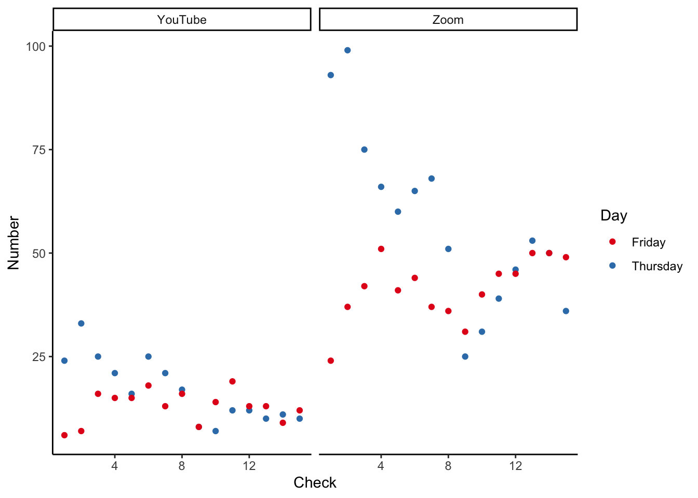

The Toronto Workshop on Reproducibility
Notes and reflections on a workshop about reproducibility in applied statistics.
Introduction
On 25 and 26 February 2021, I hosted the Toronto Workshop on Reproducibility. This was an online event with 35 speakers that 1,284 people signed up for. In the end we averaged around 50 attendees at any one time in the Zoom room, with another 20 on the YouTube live-stream. Talks were recorded and posted to YouTube, and as of today (two days after) the most popular one has been viewed 73 times.
In this post I will first provide a brief summary of the talks, then discuss attendance. I will provide my view on aspects that were good and bad. And finally detail next steps.
Talks
I first invited keynote speakers and then invited talks from folks that were known to me. I put out a call on Twitter for recommendations of folks that were traditionally overlooked in applied statistics. After establishing that core, I then opened invited applications to speak more generally. A few speakers contacted me asking if they could speak and finally, I specifically invited two undergrads to speak.
There was a wide variety of talks, including some that would not be out of place at JSM, through to collections of personal anecdotes. The standard of the talks was uniformly high, however the order was dictated more by timezone of the presenter, rather than topic and so there were considerable differences between neighbouring talks.
Keynotes
The keynotes were given by Eva Vivalt, Mine Çetinkaya-Rundel, and Riana Minocher.
- Eva discussed a platform that she created for gathering forecasts of the results of work that will be conducted. For instance, if a survey is being sent to understand the effect of education on income, one could use Eva’s platform to first understand expectations of what that survey will find.
- Mine discussed the evolution of R Markdown, and her use of it in teaching. She showed how R Markdown has become indispensable and highlighted ways in which this would continue to evolve in the future.
- Riana discussed a recent paper of hers in which she evaluated the extent to which papers in social learning are able to be reproduced.
Invited talks
- Amber Simpson discussed the repeatability and reproducibility of imaging biomarkers.
- Andrés Cruz discussed an RStudio addin to supervise fuzzy joins.
- Annie Collins discussed the extent of markers of open code and open data in medRxiv.
- Emily Riederer discussed
convoR package, which aids in the creation, upkeep, and application of controlled vocabularies. - Florencia D’Andrea discussed ReproHack, which is a hackathon-style event focused on the reproducibility of research results.
- Garret Christensen discussed a recent paper looking at survey evidence on attitudes, norms and behavior in the social sciences towards open science.
- Jake Bowers discussed proposals to adjust scientific norms of reproducibility and pre-registration to the policy context.
- John Blischak discussed the
workflowrR package - Julia Schulte-Cloos introduced a template package in R that allows users without any prior knowledge of R Markdown to implement reproducible research practices in their scientific workflows.
- Lauren Kennedy discussed case studies of how and where challenges with preparing survey data appear in practice.
- Larry Fenn and Meghan Hoyer discussed AP DataKit, which is an open-source command-line tool designed to better structure and manage projects, and more generally, talk about creating sane, reproducible workflows.
- Mauricio Vargas Sepúlveda and Nicolas Didier discussed an attempt to analyze the nature and quality of civil society organizations’ contributions to develop evidence for policymaking process from reproducibility perspective.
- Monica Alexander discussed some brief reflections from research, consulting, and teaching experiences that have led to overcoming barriers to sharing code and to help others do the same.
- Nancy Reid discussed whether p-values are contributing to a crisis in replicability and reproducibility, with emphasis on the role of inferential theory in helping to clarify the arguments.
- Nick Radcliffe discussed an approach to the challenges of ensuring the correctness and robustness of results in an environment where neither code nor input data can be opened up for review and even outputs need to be subject to disclosure control to reduce further any risks to privacy.
- Radu Craiu discussed reproducibility in the context of statistical sciences.
- Ryan Briggs discussed how ‘o-ring’ production functions work and draws out lessons for applied researchers.
- Sharla Gelfand discussed what components are needed to make a good reproducible example to maximize your ability to get help (and to help yourself!), strategies for coming up with an example and testing its reproducibility, and why you should care about making one.
- Shemra Rizzo shared her experience working towards reliable, replicable and reproducible studies using EHR licensed data.
- Shiro Kuriwaki showed how new features of the dataverse R package facilitate reproducibility in empirical, substantive projects.
- Simeon Carstens gave an introduction to Nix, show in a live demo how to set up a fully reproducible software environment and compare Nix to existing solutions such as virtual environments and Docker.
- Tiffany Timbers presented examples of how UBC deeply motivate, effectively instruct and provide ample practice opportunities to our Master of Data Science students to effectively engage them in learning about reproducibility.
- Tom Barton reproduced Surridge, 2016, ‘Education and liberalism: pursuing the link’, Oxford Review of Education, 42:2, pp. 146-164, using the 1970 British Cohort Study (BCS70), instead using a difference-in-difference regression approach with more waves of data.
- Tyler Girard discussed how individual and group exercises centered around the replication of existing datasets and analyses offer a flexible tool for experiential learning.
- Wendy Duff discussed reproducibility in the context of information.
- Wijdan Tariq undertook a narrow replication of Caicedo, 2019, ‘The Mission: Human Capital Transmission, Economic Persistence, and Culture in South America’, Quarterly Journal of Economics
- Yanbo Tang showed that commonly held beliefs regarding the distribution of p-values are misleading when the variance or location of the test statistic are not well-calibrated or when the higher order cumulants of the test statistic are not negligible.
Attendance
What worked
- Undergraduate participation. I integrated two undergrad presentations into the main content. Both were exceptional and received very well by the audience.
- YouTube livestream. I only added this at the last minute because I was worried we might go over the 300-person limit in Zoom. In the end we didn’t have a worry about that, but the livestream was very popular. Some people said it was because that way they could keep it on in the background while doing other things (YouTube has better volume control than Zoom).
- Questions. There was some concern about a lack of time for questions, but in general folks were hesitant to ask questions.
What didn’t
- I needed more chairs.
- More organization.
- Slack was okay.
- We didn’t really do any ‘networking’ type events.
- Funding.s
- We needed more time.